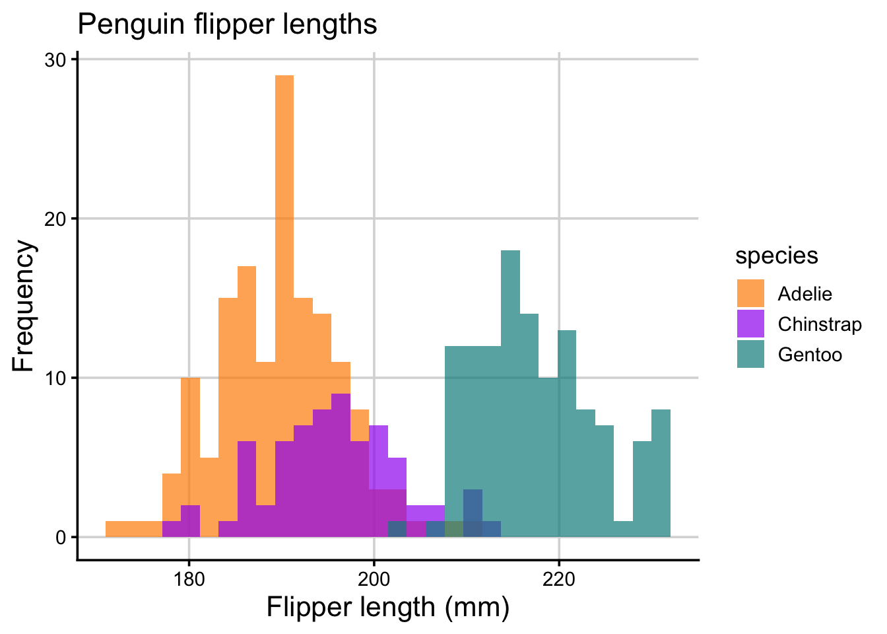
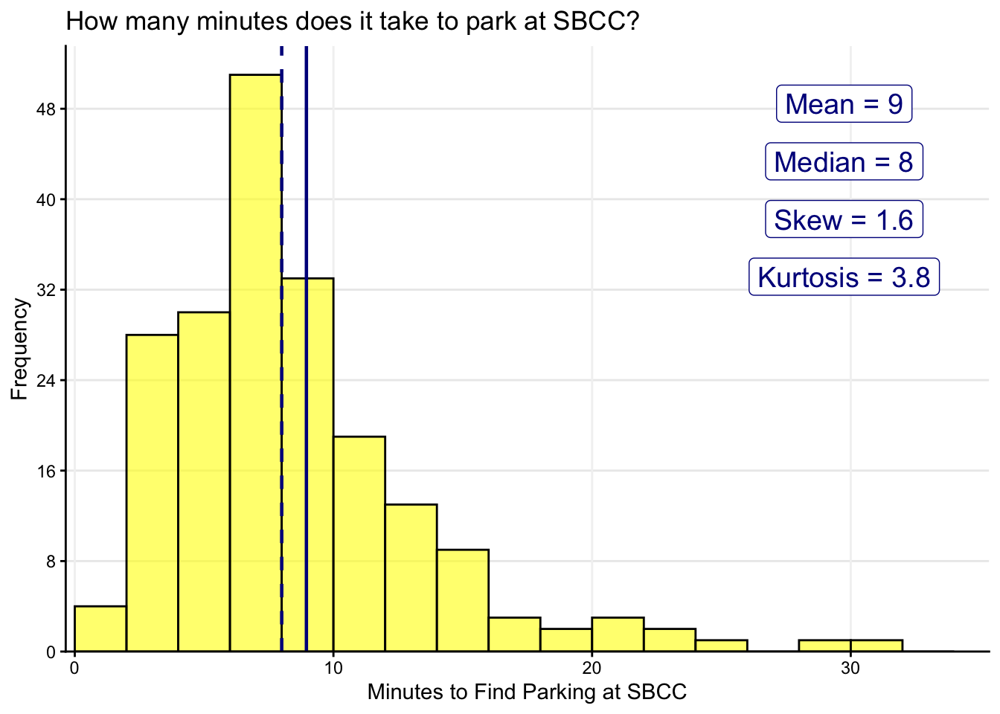
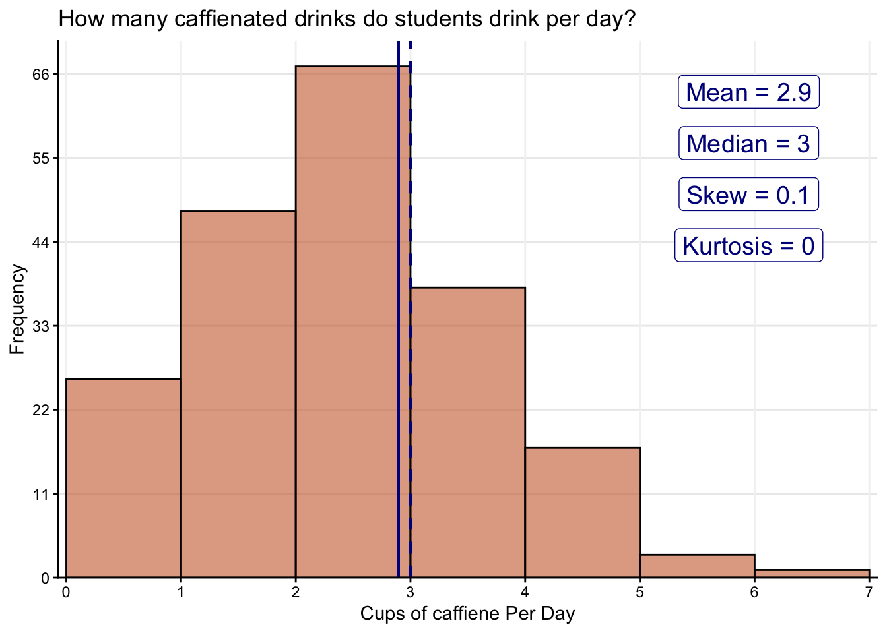
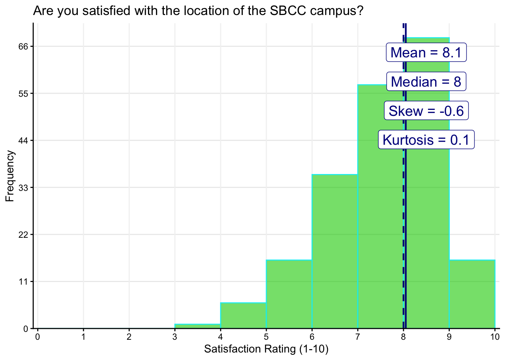
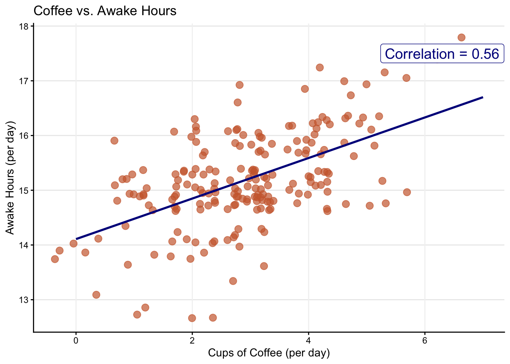
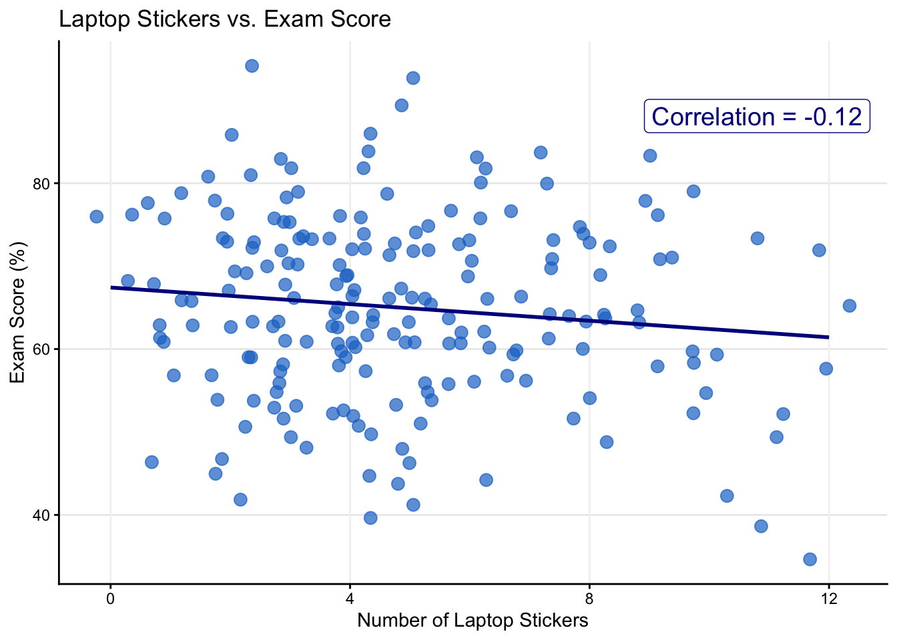
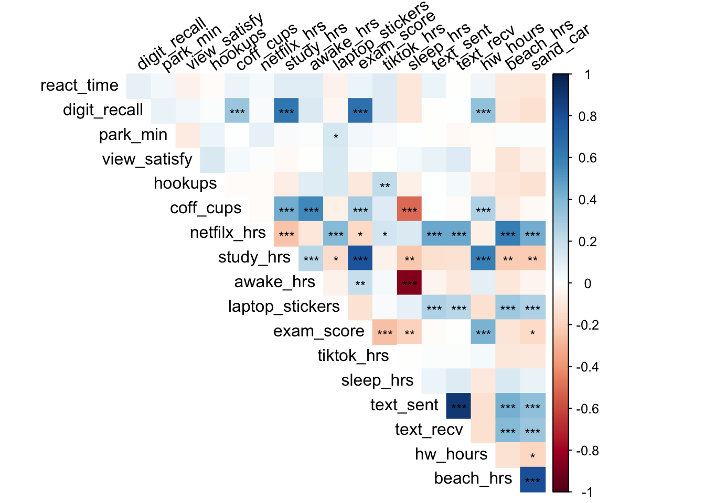

#### RUN CODE BLOCK (green triangle right hand corner of grey box) >>>>>
library(psych)
library(tidyverse)
library(janitor)
library(ggpubr)
library(ggrepel)
library(here)
library(palmerpenguins)
library(corrplot)
library(sjPlot)Week 3: Investigate Distributions, Variable Associations, & Correlations
PSY 150: Lab Exercise
Step 1: Load packages
Load Plot Functions
source("load_plot_functions.R")Keyboard shortcuts (Use them!)
MAC / WINDOWS
Run code(at cursor): COMMAND/CONTROL + RETURN/ENTERPipe operator(|>): COMMAND/CONTROL + SHIFT + MAdd code chunk: COMMAND/CONTROL + OPTION/ALT + IAssignment operator(<-): OPTION/ALT + MINUS(“-”)Search: COMMAND/CONTROL + F
Penguins Data Source: {palmerpenguins}
The Palmer Penguins dataset contains real measurements of penguins observed on three islands in the Palmer Archipelago, Antarctica (Horst et al., 2020).
Source: https://allisonhorst.github.io/palmerpenguins/
Load Palmer Penguin data set
penguin_data <- palmerpenguins::penguinsWhat is the bimodal distribution flipper_length_mm hiding?
penguin_data |>
ggplot(aes(x = flipper_length_mm, fill = species)) +
geom_histogram(
alpha = 0.7,
position = "identity") +
scale_fill_manual(values = c("darkorange","purple","cyan4")) +
labs(x = "Flipper length (mm)",
y = "Frequency",
title = "Penguin flipper lengths") +
theme_classic_grid()
Data source:
In this part of the lab we are using data that was simulated in R to follow trends found in behavioral science data. The data is not real survey data so do not take it too seriously!
Read in the CSV spreadsheet named sim_college_data.csv located in the data folder
college_data <- read_csv(here("data", "sim_college_data.csv"))Note: Always take a look at the data!
Take a look at the variables available in college_data
names(college_data) [1] "student_id" "react_time" "digit_recall" "park_min"
[5] "view_satisfy" "hookups" "coff_cups" "netfilx_hrs"
[9] "chip_bags" "sneezes" "study_hrs" "awake_hrs"
[13] "laptop_stickers" "exam_score" "tiktok_hrs" "sleep_hrs"
[17] "text_sent" "text_recv" "seagulls" "hw_hours"
[21] "beach_hrs" "sand_car" Investigating frequency distributions using histogram plots
How many minutes does it take to park at SBCC?
hist_plot(
data = college_data,
x_var = park_min,
x_label = "Minutes to Find Parking at SBCC",
binwidth=2,
fill = "yellow",
color = "black",
break_min = 0, break_max = 35, break_by = 10,
mean_line = TRUE, median_line = TRUE,
skew_value = TRUE, kurtosis_value = TRUE,
title = "How many minutes does it take to park at SBCC?",
) 
Question 1: Describe the distribution:
- Is the variable skewed & if so which direction is it skewed?
- How does the mean compare to the median, and what explains this difference?
Response: __________________________________________
What is the caffiene intake for students at SBCC per day?
hist_plot(
data = college_data,
x_var = coff_cups,
x_label = "Cups of caffiene Per Day",
binwidth=1,
fill = "sienna3", color = "black",
break_min = 0, break_max = 7, break_by = 1,
mean_line = TRUE, median_line = TRUE,
skew_value = TRUE, kurtosis_value = TRUE,
title = "How many caffienated drinks do students drink per day?"
)
Question 2: What is the mode for the variable caffeinated drinks?
Response: __________________________________________
Are you satisfied with the location of the SBCC campus?
hist_plot(
data = college_data,
binwidth=1,
x_var = view_satisfy,
x_label = "Satisfaction Rating (1-10)",
fill = "green3", color = "cyan2",
break_min = 0, break_max = 10, break_by = 1,
mean_line = TRUE, median_line = TRUE,
skew_value = TRUE, kurtosis_value = TRUE,
title = "Are you satisfied with the location of the SBCC campus?"
)
Question 3: Is the variable skewed & if so which direction is it skewed?
Response: __________________________________________
Pick a variable to look at it’s distribution?
hist_plot(
data = college_data,
binwidth=***,
x_var = ***,
x_label = "***",
fill = "***", color = "***",
#break_min = , break_max = , break_by = ,
mean_line = TRUE, median_line = TRUE,
skew_value = TRUE, kurtosis_value = TRUE,
title = ""
)Question 4: Describe the variables shape:
Response: __________________________________________
Two variable associations & correlation
Does coffee help you stay awake?
scatter_plot(
data = college_data,
x_var = coff_cups,
x_label = "Cups of Coffee (per day)",
y_label = "Awake Hours (per day)",
y_var = awake_hrs,
point_color = "sienna3",
corr_line = TRUE,
title = "Coffee vs. Awake Hours",
)
Question 5: Describe the correlation:
- How strong is the correlation (weak, moderate, strong)?
- Is the correlation positive or negative?
Response: __________________________________________
Are the number of laptop stickers associated with exam score?
scatter_plot(
data = college_data,
x_var = laptop_stickers,
x_label = "Number of Laptop Stickers",
y_var = exam_score,
y_label = "Exam Score (%)",
point_color = "dodgerblue3",
corr_line = TRUE,
title = "Laptop Stickers vs. Exam Score"
)
Question 6: Describe the correlation (strength/direction). Is this association meaningful?
Response: __________________________________________
Create a correlation plot
Estimate correlations & significance
# Select variables to plot
sample_corr <- corr.test(
college_data |>
select(react_time:netfilx_hrs,
study_hrs:text_recv,
hw_hours,beach_hrs,sand_car),
adjust = "none"
)Create a correlation plot with significance
corrplot(
sample_corr$r,
p.mat = sample_corr$p,
method = "color",
type = "upper", diag = FALSE,
insig = "label_sig", pch.cex = 0.8,
sig.level = c(.001, .01, .05),
tl.col = "black", tl.srt = 35)
Question 9: Select a pair of variables, describe the strength of their correlation, and state if the p-value indicates significance:
Response: __________________________________________
### Create a correlation table
college_data |>
select(coff_cups, digit_recall,exam_score,
study_hrs,sleep_hrs, netfilx_hrs) |>
tab_corr(
triangle = "lower",
digits = 2
)| coff_cups | digit_recall | exam_score | study_hrs | sleep_hrs | netfilx_hrs | |
| coff_cups | ||||||
| digit_recall | 0.33*** | |||||
| exam_score | 0.30*** | 0.66*** | ||||
| study_hrs | 0.43*** | 0.63*** | 0.79*** | |||
| sleep_hrs | -0.51*** | -0.11 | -0.19** | -0.23** | ||
| netfilx_hrs | -0.02 | 0.03 | -0.16* | -0.24*** | 0.12 | |
| Computed correlation used pearson-method with listwise-deletion. | ||||||
Question 10: Select a different pair of variables, describe the strength of their correlation, and state if the p-value indicates significance.
Response: __________________________________________